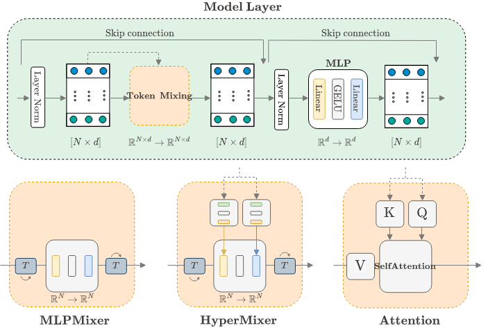
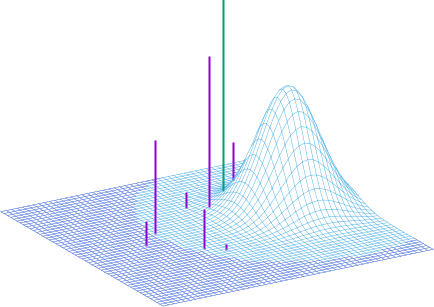
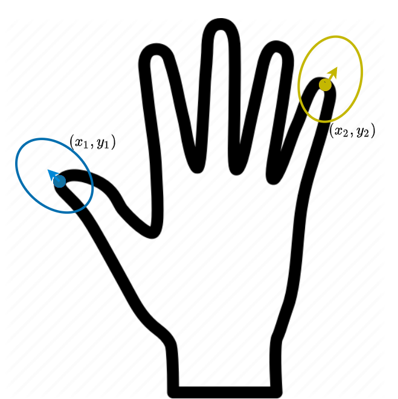
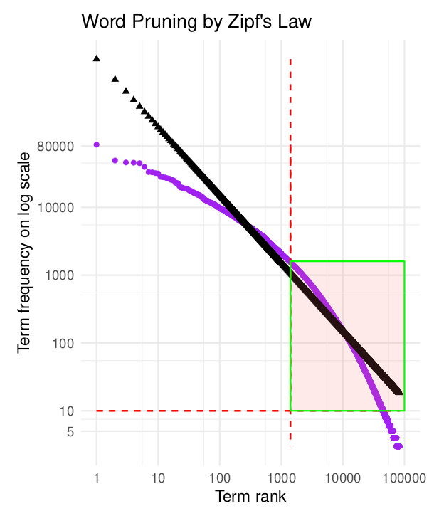

Research
My research interests are in the connections between human cognition and deep learning. Specifically, attention-based representation learning, Bayesian nonparametrics and their applications to text generation tasks. You can find my papers on Google Scholar, Arxiv and DeepAI.
2023
|  | HyperMixer: An MLP-based Low Cost Alternative to Transformers, F. Mai, A. Pannatier, F. Fehr, H. Chen, F. Marelli, F. Fleuret, J. Henderson. ACL, 2023. (paper) |
 |
A Variational AutoEncoder for Transformers with Nonparametric Variational Information Bottleneck, J. Henderson, F. Fehr ICLR, 2023. (paper) (Presentation) (Poster) (Code) |
2022
|  | A Variational AutoEncoder for Transformers with Nonparametric Variational Information Bottleneck, J. Henderson, F. Fehr On Arxiv, 2022. (paper) |
| HyperMixer: An MLP-based Green AI Alternative to Transformers, F. Mai, A. Pannatier, F. Fehr, H. Chen, F. Marelli, F. Fleuret, J. Henderson. On Arxiv, 2022. (paper) |
2020
|  | Modelling non-linearity in 3D shapes: A comparative study of Gaussian process morphable models and variational autoencoders for 3D shape data, F. Fehr OpenUCT MSc Thesis, 2020. (paper) |
2018
|  | Text Content Classification on News Articles, F. Fehr S. Soutar UCT BBusSc Thesis, 2018. (paper) |